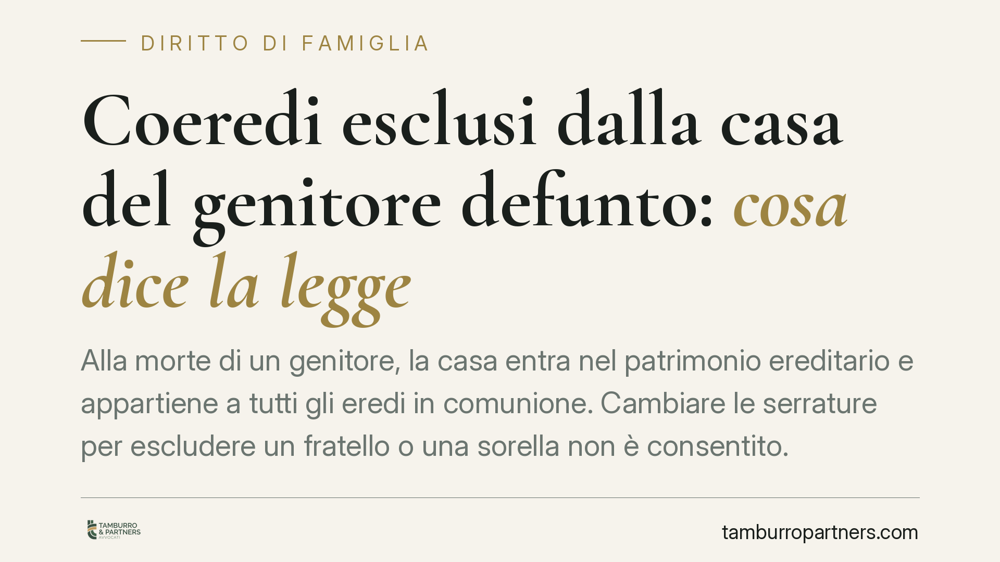

Coeredi esclusi dalla casa del genitore defunto: cosa dice la legge
Alla morte di un genitore, la casa entra nel patrimonio ereditario e appartiene a tutti gli eredi in comunione. Cambiare le serrature per escludere un fratello o una sorella non è consentito. Chi subisce l'esclusione dispone di strumenti precisi per riottenere l'accesso al bene comune, dalla reintegrazione nel possesso alla petizione di eredità.

Il caso tipico
Un genitore muore. La casa in cui viveva passa agli eredi. Uno dei figli, però, cambia le chiavi e impedisce agli altri di entrare. È una situazione ricorrente e genera contrasti spesso profondi.
La domanda è semplice: chi è stato escluso può rientrare nella casa? La risposta, sul piano del diritto, è affermativa. Vediamo perché e con quali strumenti.
Inquadramento normativo
Alla morte del genitore si apre la successione e i beni cadono in comunione ereditaria: ogni erede è contitolare dell'intero patrimonio, in proporzione alla propria quota. Nessun coerede può disporre da solo del bene comune né escludere gli altri dal suo godimento.
Il possesso dei beni ereditari si trasmette automaticamente agli eredi al momento dell'apertura della successione, senza bisogno di materiale apprensione. È la regola della successione nel possesso prevista dall'art. 1146 del codice civile: l'erede continua il possesso del defunto con le stesse caratteristiche.
Da qui deriva la conseguenza pratica. Il coerede che cambia le serrature e chiude fuori gli altri compie uno spoglio, cioè una privazione del possesso altrui. Contro lo spoglio la legge appronta l'azione di reintegrazione (art. 1168 c.c.), che consente a chi è stato violentemente o clandestinamente privato del possesso di ottenerne il ripristino. Il termine per agire è di un anno dal sofferto spoglio.
Quando invece il conflitto riguarda la stessa qualità di erede, o l'altro contesta il diritto sui beni ereditari, entra in gioco la petizione di eredità (art. 533 c.c.): l'azione con cui l'erede chiede il riconoscimento della propria qualità e la restituzione dei beni contro chi li possiede senza titolo o vantando un titolo inferiore.
Su questi temi si sono pronunciati più volte i tribunali di merito — tra cui Cagliari, Cosenza, Marsala, Napoli e Reggio Calabria — e le Corti d'Appello di Bologna e L'Aquila, oltre alla Corte di Cassazione, con orientamenti sostanzialmente allineati nel tutelare l'accesso paritario dei coeredi.
Cosa cambia per chi è stato escluso
Chi si vede negare l'ingresso alla casa del genitore non è privo di rimedi. Occorre però distinguere le situazioni, perché lo strumento corretto dipende dai fatti.
Se l'esclusione è recente e materiale — chiavi cambiate, porta sbarrata — la strada più diretta è l'azione possessoria di reintegrazione, che ha tempi rapidi e non richiede di provare da subito la titolarità del diritto, ma il solo possesso e la sua perdita.
Se invece il fratello contesta la stessa qualità di erede, o si comporta come unico proprietario negando agli altri ogni diritto, il rimedio è la petizione ereditaria, che affronta il merito della successione.
È bene chiarire un punto: l'accesso non equivale a un diritto di abitare stabilmente il bene escludendo gli altri. La casa resta in comunione, e il godimento va coordinato tra tutti i coeredi. Nessuno può trasformare un bene comune in una proprietà esclusiva di fatto.
Va infine considerata la via della divisione ereditaria: quando la convivenza gestionale è impossibile, ciascun erede può chiedere lo scioglimento della comunione, con assegnazione o vendita del bene e ripartizione del ricavato.
Cosa fare in concreto
- Documenta l'esclusione: raccogli prove del cambio serratura e del rifiuto di accesso (messaggi, testimoni, eventuale verbale delle forze dell'ordine).
- Verifica i termini: l'azione di reintegrazione si prescrive in un anno dallo spoglio. Non attendere.
- Recupera la documentazione successoria: certificato di morte, eventuale testamento, dichiarazione di successione, visure catastali dell'immobile.
- Invia una diffida formale al coerede chiedendo il ripristino dell'accesso, prima di adire l'autorità giudiziaria.
- Valuta lo strumento corretto con un professionista: reintegrazione, petizione ereditaria o domanda di divisione rispondono a esigenze diverse.
Consigliamo di non agire in autotutela — ad esempio forzando la porta — perché ciò può capovolgere le posizioni e trasformare chi ha subito il torto in autore di un illecito.
Disclaimer
Contributo informativo a cura di Tamburro & Partners - Avv. Giuseppe Tamburro. Non costituisce parere legale.
Ogni famiglia ha il suo equilibrio.
Separazione, divorzio, affidamento, assegno: se vuoi un confronto riservato su una specifica situazione, scrivi allo studio. Ti rispondiamo entro un giorno lavorativo.